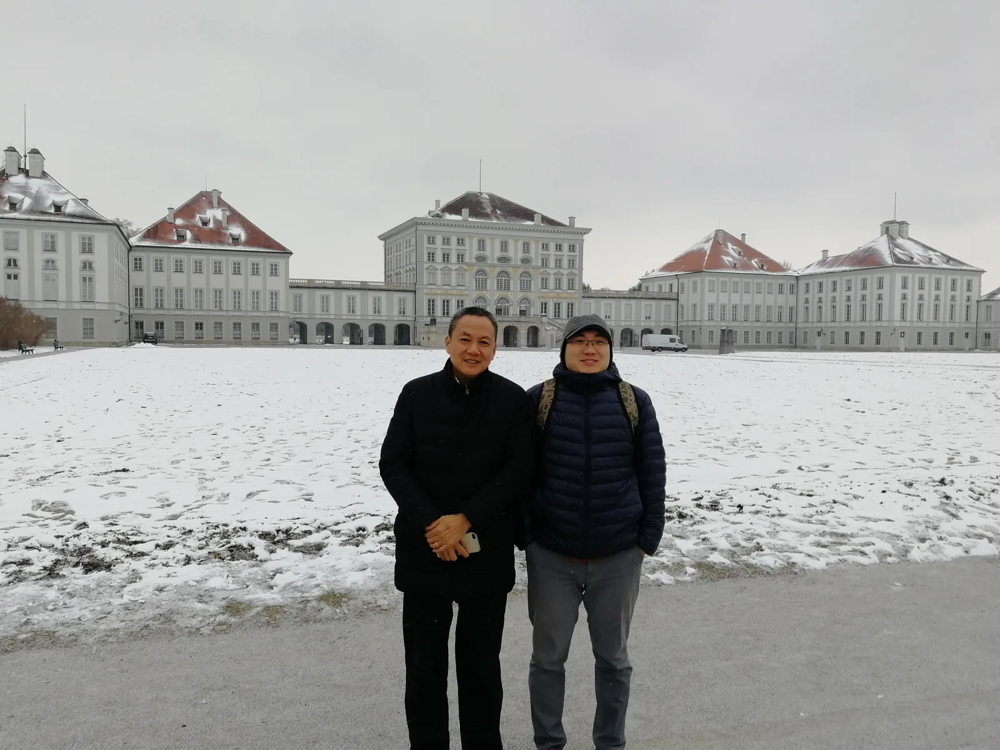
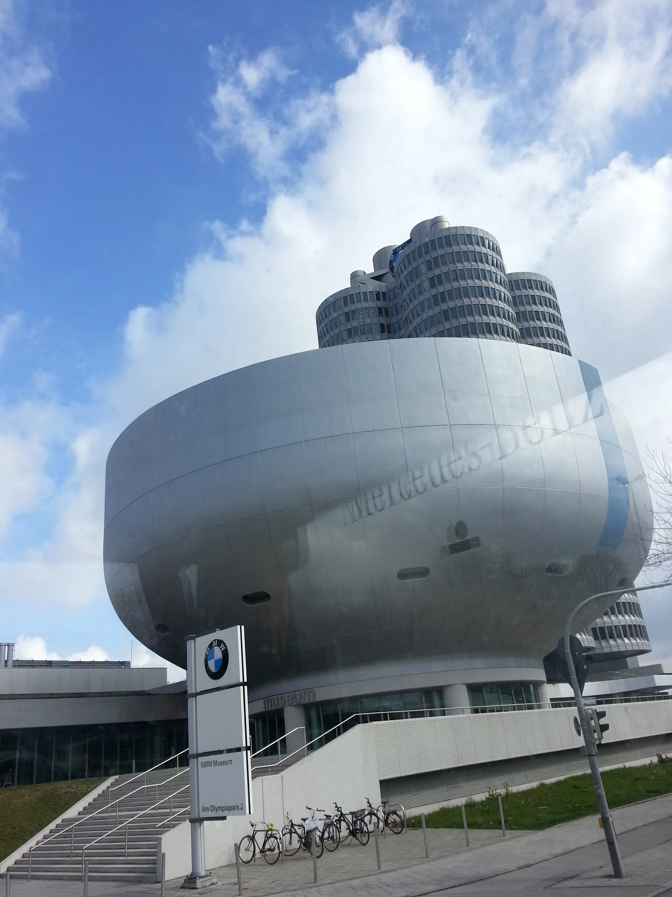
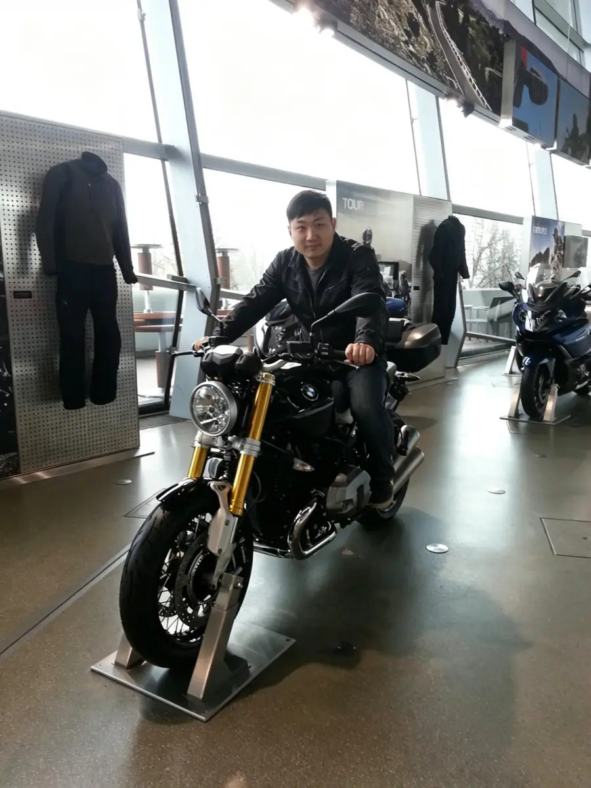
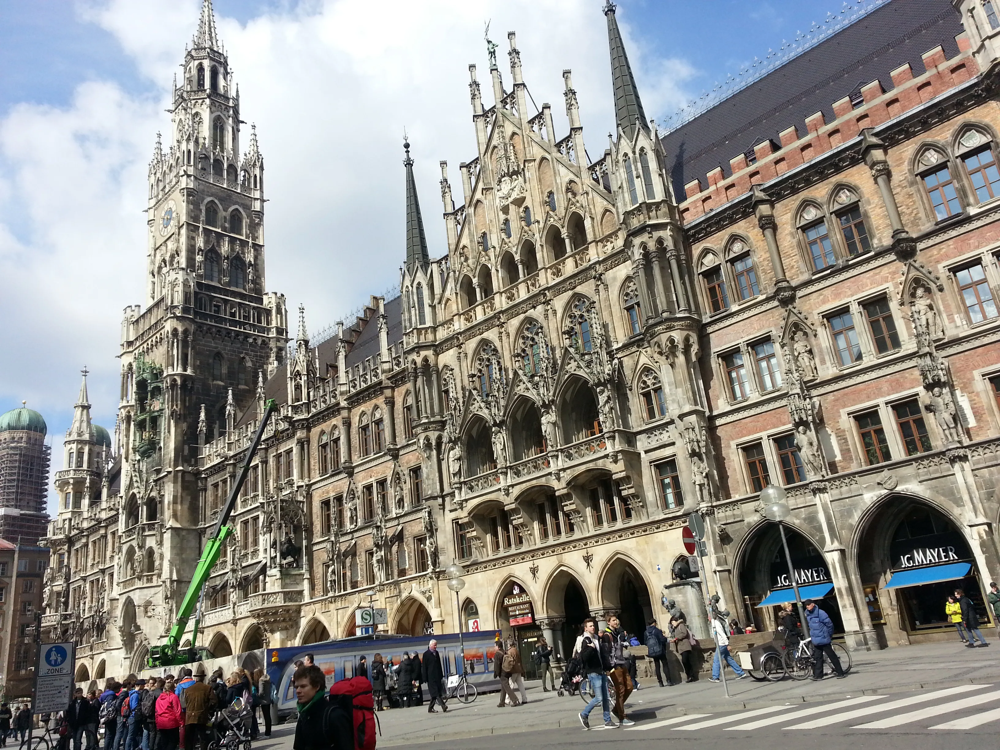
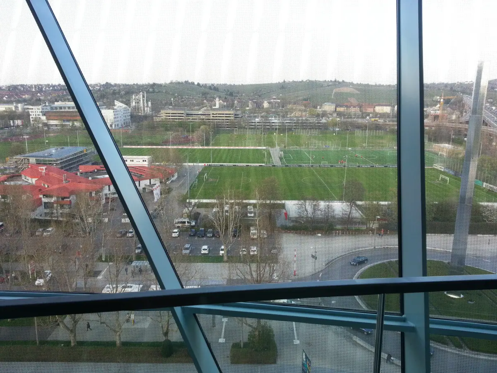

慕尼黑（第二次）：一座"很德国"的城市，和宝马刚刚亮出的电动化底牌
Munich, the second time — a very German city, and BMW's freshly shown electrification hand.

（2018 年 · 德国 · 慕尼黑 · 宝马再访）
这座城市，居然可以这么「德国」
你说这次对慕尼黑的印象是「基本都是德国人，外国人没那么多」，这个观察挺有意思——放在法兰克福、布鲁塞尔、阿姆斯特丹这些你之前去过的欧洲城市对照组里看，慕尼黑确实是个异类。法兰克福因为金融和航空枢纽的地位，聚集了大量国际商务人群和华人社区；布鲁塞尔因为欧盟总部所在地的身份，街头本来就充斥着来自欧洲各国的公务员和外交官；但慕尼黑虽然贵为巴伐利亚首府、德国经济第三大城市，骨子里却更像一座「本地人的城市」——巴伐利亚这个地区本身文化认同感就极强，方言、啤酒节、传统服饰这些地方文化符号，至今在慕尼黑本地生活里占据着相当分量的位置，这和德国其他更「国际化」的商业中心比，反而保留了更多「这就是德国」的原味。


安联球场：拜仁和 1860 共用了十几年的一座球场
你提到在宝马总部附近看到一个球场，大概率是安联球场——虽然严格说它和宝马总部隔着几公里，但两者确实都在慕尼黑北部这同一片区域，从宝马总部或者宝马世界（BMW Welt）那一带往北看，是能看到这座球场标志性的白色充气膜结构外观的。
这座球场 2005 年建成，由拜仁慕尼黑和慕尼黑 1860 联合出资 3.5 亿欧元建造——是的，慕尼黑这座城市历史上有两支顶级球队：拜仁慕尼黑是全德国最成功的俱乐部，而慕尼黑 1860 其实是更老牌的那一个，俱乐部渊源能追溯到 1848 年的一个体操协会，还曾是 1963 年德甲联赛的创始成员之一。两家球队共用安联球场共用了十几年，直到 2014 年拜仁全额接手了球场的贷款，球场才变成拜仁独有，1860 从此只能以租借形式使用。这也是慕尼黑这座城市挺特殊的一面——一座城市容得下两支背景、命运完全不同的球队，一个是常年称霸德甲的豪门，一个是几度降级、差点破产的老牌俱乐部，两者却曾经共用同一片主场十几年，某种意义上也挺「巴伐利亚」的：骨子里认同感很强，但也讲究实用和体面共存。


宝马：2018 年，电动化底牌第一次真正摊开
这次重访宝马，正好赶上宝马电动化战略最关键的一个年份。2018 年宝马集团的研发投入达到 68.9 亿欧元，占总营收的 7.1%，创下当时的历史新高，重点方向就砸在自动驾驶和电动出行这两块面向未来的领域上。这一年，宝马通过 BMW Vision iNEXT 概念车，第一次把它对未来出行的完整构想——「ACES」（自动化、互联化、电动化、共享化）——集中呈现给了公众，这款概念车某种意义上就是宝马给自己画的一张十年技术路线图。到 2018 年底，宝马集团已经向全球客户累计交付超过 35 万辆电动车，其中 13 万辆是纯电动车型，22 万辆是插电混动。更关键的是，这一年宝马已经明确了下一步的落子——纯电动 MINI 计划 2019 年底在英国牛津工厂投产，而真正意义上的重头戏，是计划在中国沈阳生产、面向全球出口的纯电动 BMW iX3，这也是宝马第五代电力驱动技术第一次应用在量产车型上。
写在最后
第二次站在慕尼黑，城市本身没有太大变化，还是那座「很德国」、外国面孔不算多的巴伐利亚首府；但宝马这家企业，已经从 2016 年博物馆里那个讲百年历史的品牌，变成了一个正在集中兵力押注电动化未来的公司。一座城市的性格可以几十年不变，但站在这座城市里的企业，却要不断把自己的下一步想清楚——这大概也是「传统」和「转型」能够在同一个地方共存的原因。
一座城市的性格可以几十年不变，但站在这座城市里的企业，必须不断把自己的下一步想清楚。
——董立鑫 海鑫汇创始人兼执行总裁，新加坡世贸秘书长兼首席运营官
本文整理自董立鑫（Bruce Dong）海外产业考察记录，首发于海鑫汇。